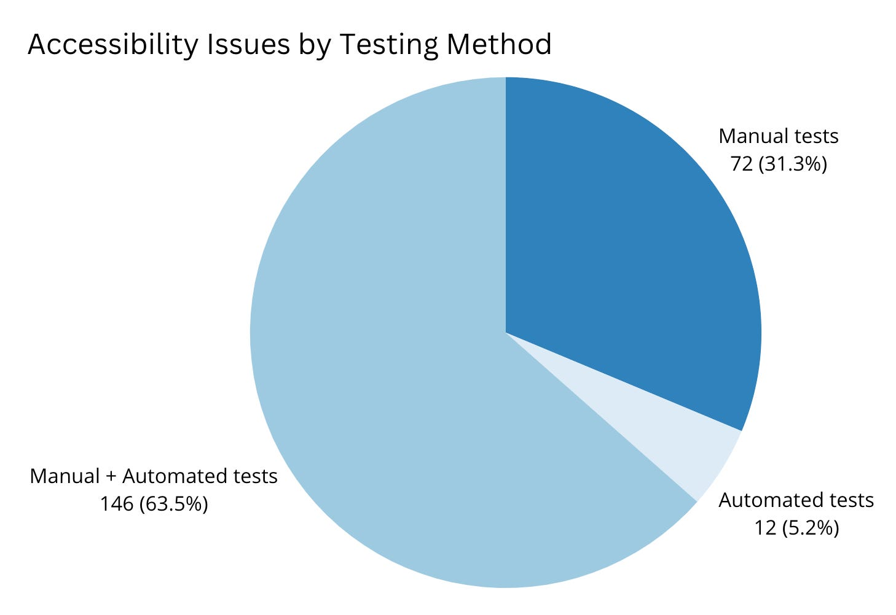

By Maggie Wachs
When we talk about testing websites for accessibility, one of the most frequently cited statistics is that automated testing discovers 30% to 60% of the errors we need to address. (Aside: that discrepancy seems to be due to how you define the number of errors, by type or frequency.) No matter which number is cited, this means a significant number of accessibility violations, around 40–70%, still require an actual human user to verify.
This past year, from November 2022 to now, the accessibility practice for the Web Experience and Content Management Services (WECMS) team, which supports the Centers for Medicare and Medicaid (CMS), has increased our manual testing efforts. With all of this in mind, I thought it would be interesting to quantify how much effort we spent verifying accessibility issues via automated testing, manual testing, or a combination of both — especially as this relates to concerns raised in the recently published Government-wide Section 508 Assessment. A few of the criteria directly address manual testing efforts:
13/ If your agency uses a manual and/or hybrid ICT accessibility test methodology for web content, which manual test methodology or methodologies does your agency use?
47/ Indicate how often your agency conducts comprehensive manual conformance validation testing for web content (internet and intranet) prior to deployment to address all applicable Section 508 standards.
68/ How many public internet web pages were evaluated by a combination of both automated and manual testing in the reporting period?
Assessment methods
We can determine which form of testing — automated, manual, or both — was required for our project’s tickets by looking at the Web Content Accessibility Guidelines (WCAG) success criteria that apply to each issue/ticket. A very small number of WCAG criteria can be verified by automated testing alone; the vast majority require some degree of manual review. For example, an ARIA label that satisfies 1.3.1 Info and Relationships can be detected by an automated test, but the value must be reviewed manually by a person to confirm that it makes sense.
First, I added labels to all accessibility issues in Jira resolved between November 2022 and 2023 that reference the relevant WCAG criteria (i.e., “WCAG-2.5.3”). While this exercise was somewhat time-consuming —we logged around 300 accessibility issues total across 7 websites — it was well worth the time as it will greatly simplify updates to our upcoming annual reporting process. So, win-win.
Then I mapped the testing method to each criterion in this matrix (see Appendix A: Required testing methods by WCAG criteria), based on a similar matrix published by Usablenet and the axe-core rule definitions. Each axe-core rule is assigned an Issue Type, which notes whether a rule can result in failure (a clear accessibility violation), or if it needs review, which Deque defines as, “there may or not be an accessibility issue and more investigation is required.” If an axe-core rule’s issue type includes “needs review,” that rule, and by extension the WCAG criteria tested, may require manual testing.
Results
We logged around 300 accessibility issues total, however only 230 tickets represented WCAG violations (the rest related to best practices or discovery). Of those:
- 146 required both automated and manual testing
- 72 could be verified with manual tests only
- 12 could be verified with automated tests only

Summary
The WECMS team made great strides with manual testing in 2023, and testing in general:
- Most of the WCAG violations we fixed were verified by a person using a keyboard or screen reader, and/or by considering context, meaning, purpose, logical placement, and allowed exceptions.
- Code written by our engineers consistently has few objective errors that can be discovered with automated testing. I can vouch for our design and development teams using semantic markup, including text labels, checking color values, and overall creating templates and experiences that will pass automated checks.
This exercise showed that manual testing is not only necessary, it accounts for most of the time we spend verifying accessibility conformance for the WECMS websites. We can now use these results to inform how much effort we put toward, for example, team training on screen reader use, and it can fine-tune how we prioritize time and resources for remediating issues.
It’s important to remember that while we’re growing more proficient with manual testing tools and methods, usability testing with disabled people — the true experts when it comes to assessing a website’s accessibility — should continue to be a top goal for our accessibility practice.